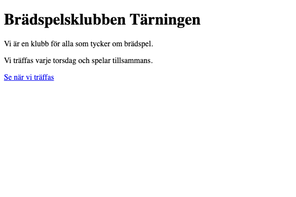
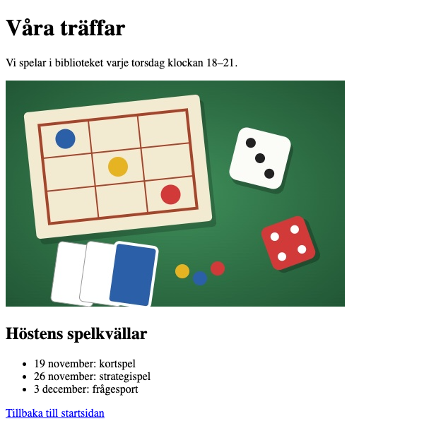

Övning T3 · Två sidor som hänger ihop
Läs så här: Välj en nivå per etapp: 🟢 Grön ger dig varje steg, 🔵 Blå säger vad som behövs men inte koden, 🔴 Röd ger bara kravet. Etapperna är desamma på alla nivåer, så du kan byta nivå mellan etapperna (och mitt i om du fastnar). Varje etapp slutar med Så vet du att etappen är klar: kontrollera den innan du går vidare. Längst ner finns Vanliga fel och, om du vill ha mer, ⚫ Svart.
Du bygger: en andra sida till Brädspelsklubben Tärningen från Övning T1, traffar.html, med klubbens spelkvällar och en bild. Startsidan länkar till den nya sidan och den nya sidan länkar tillbaka, så att du kan klicka fram och tillbaka. Bilden ligger i en egen mapp, bilder. Precis så ser ditt projekt ut när det har flera sidor.


Du behöver: mappen ovningar med index.html från Övning T1, öppen i VS Code, och Live Server igång (tillägget i VS Code som visar sidan i Chrome och laddar om den när du sparar). Bildfilen spelkvall.jpg, som ligger bredvid den här övningen i Learnpoint. Övning T2 behöver du inte ha gjort.
Etapp 1 · Mappen för bilder
Varför: när en webbplats, flera sidor som hör ihop, får fler filer blir det lättare att hitta om bilderna ligger i en egen mapp.
🟢 Grön · Steg för steg
- I VS Code: håll pekaren över OVNINGAR i filpanelen (listan över filerna, till vänster) och klicka på ikonen New Folder… (en mapp med ett plustecken).
- Skriv
bilderoch tryck Enter. Små bokstäver, inget mellanslag. - Ladda ner
spelkvall.jpgfrån Learnpoint. Filen hamnar i Hämtade filer (Downloads). - Dra filen från Finder (Mac) eller Utforskaren (Windows) och släpp den på mappen bilder i filpanelen.
- Klicka på pilen framför bilder i filpanelen så att mappen öppnas.
spelkvall.jpgska ligga där, med indrag under bilder.
En mapp inuti en annan mapp kallas undermapp. bilder är en undermapp till ovningar.
🔵 Blå · Med ledtrådar
Skapa undermappen bilder i ovningar (ikonen New Folder… i filpanelen). Lägg spelkvall.jpg från Learnpoint i den. Mappnamnet: små bokstäver, inget mellanslag.
🔴 Röd · Bara kravet
spelkvall.jpg ligger i en undermapp bilder i ovningar.
spelkvall.jpg under sig (med indrag), och index.html ligger kvar direkt under OVNINGAR, inte inuti bilder.Etapp 2 · Den andra sidan
Varför: varje sida är en egen fil med samma skelett, och bara innehållet i <body> skiljer sidorna åt.
🟢 Grön · Steg för steg
- Håll pekaren över OVNINGAR och klicka på New File…. Skriv
traffar.htmloch tryck Enter. Skriv filnamnet utan å, ä och ö, även om ordet är träffar. (Ligger filen inutibilder? Dra den till OVNINGAR. Den ska ligga bredvidindex.html.) - Skriv sidan. Skelettet är samma som i
index.html, och du får kopiera det därifrån. VS Code skriver sluttaggarna (de med snedstreck, till exempel</p>) åt dig när du skriver starttaggen; hoppa förbi dem med högerpilen i stället för att skriva dem en gång till.
<!doctype html>
<html>
<head>
<meta charset="utf-8" />
<title>Träffar – Brädspelsklubben Tärningen</title>
</head>
<body>
<h1>Våra träffar</h1>
<p>Vi spelar i biblioteket varje torsdag klockan 18–21.</p>
<h2>Höstens spelkvällar</h2>
<ul>
<li>19 november: kortspel</li>
<li>26 november: strategispel</li>
<li>3 december: frågesport</li>
</ul>
</body>
</html>- Spara. I Chrome: ändra slutet av adressen till
traffar.html, så att det stårhttp://127.0.0.1:5500/traffar.html, och tryck Enter.
Texten i <title> och på sidan får ha å, ä och ö. Det är bara filnamnet som inte ska ha det.
🔵 Blå · Med ledtrådar
Skapa traffar.html direkt i ovningar (inte i bilder). Samma skelett som index.html, med titeln Träffar – Brädspelsklubben Tärningen. Inuti body, i ordning:
h1: Våra träffarp: Vi spelar i biblioteket varje torsdag klockan 18–21.h2: Höstens spelkvällar- en punktlista (
ul, ettliper rad): 19 november: kortspel, 26 november: strategispel, 3 december: frågesport
Öppna sidan i Chrome via Live Server.
🔴 Röd · Bara kravet
traffar.html bredvid index.html, med samma skelett och innehållet i slutbilden (utom bilden och länken, som kommer i nästa etapper).
http://127.0.0.1:5500/traffar.html visar rubriken Våra träffar, stycket, underrubriken och listan med tre spelkvällar. Fliken heter Träffar – Brädspelsklubben Tärningen.Etapp 3 · Bilden från undermappen
Varför: när bilden ligger i en annan mapp än sidan måste sökvägen säga vilken mapp den ligger i.
🟢 Grön · Steg för steg
- I
traffar.html: ställ markören i slutet av raden som börjar med<p>Vi spelar, tryck Enter och skriv:
<img src="bilder/spelkvall.jpg" alt="Ett spelbräde, tärningar och kort" />- Spara och titta i Chrome.
<img> visar en bild. Värdet i attributet src, uppgiften i starttaggen som pekar på bildfilen, är en relativ sökväg: vägen till filen räknat från sidan som visar den. bilder/spelkvall.jpg betyder "gå in i mappen bilder och ta filen spelkvall.jpg". Snedstrecket skiljer mappen från filen. Skriv alltid snedstreck framåt, /, även på Windows. alt är bildens alternativtext, som läses upp av en skärmläsare (programmet som läser upp sidan för den som inte ser) och visas om bilden inte går att ladda.
🔵 Blå · Med ledtrådar
Efter stycket: ett img med src och alt. Sökvägen i src börjar med mappens namn, sedan ett snedstreck /, sedan filnamnet. alt beskriver vad bilden visar.
🔴 Röd · Bara kravet
Bilden bilder/spelkvall.jpg visas efter stycket på traffar.html och har en alt-text som beskriver den.
Etapp 4 · Länkar fram och tillbaka
Varför: två sidor blir en webbplats först när man kan klicka sig mellan dem.
🟢 Grön · Steg för steg
- Öppna
index.html. Ställ markören i slutet av det sista stycket (raden före</body>), tryck Enter och skriv:
<p><a href="traffar.html">Se när vi träffas</a></p>- Spara. Hela
index.htmlser nu ut så här:
<!doctype html>
<html>
<head>
<meta charset="utf-8" />
<title>Brädspelsklubben Tärningen</title>
</head>
<body>
<h1>Brädspelsklubben Tärningen</h1>
<p>Vi är en klubb för alla som tycker om brädspel.</p>
<p>Vi träffas varje torsdag och spelar tillsammans.</p>
<p><a href="traffar.html">Se när vi träffas</a></p>
</body>
</html>- Öppna
traffar.html. Ställ markören i slutet av raden</ul>, tryck Enter och skriv:
<p><a href="index.html">Tillbaka till startsidan</a></p>- Spara. Hela
traffar.htmlser nu ut så här:
<!doctype html>
<html>
<head>
<meta charset="utf-8" />
<title>Träffar – Brädspelsklubben Tärningen</title>
</head>
<body>
<h1>Våra träffar</h1>
<p>Vi spelar i biblioteket varje torsdag klockan 18–21.</p>
<img src="bilder/spelkvall.jpg" alt="Ett spelbräde, tärningar och kort" />
<h2>Höstens spelkvällar</h2>
<ul>
<li>19 november: kortspel</li>
<li>26 november: strategispel</li>
<li>3 december: frågesport</li>
</ul>
<p><a href="index.html">Tillbaka till startsidan</a></p>
</body>
</html>- I Chrome: gå till
http://127.0.0.1:5500/index.html. Klicka på Se när vi träffas, och sedan på Tillbaka till startsidan. Titta på adressen efter varje klick.
<a> är en länk och href adressen den går till. Här är adressen bara ett filnamn, en relativ sökväg igen: sidorna ligger i samma mapp, så Chrome letar efter filen bredvid sidan du står på. Därför fungerar länkarna också när sidan ligger på internet, där adressen börjar på något helt annat än 127.0.0.1.
🔵 Blå · Med ledtrådar
- På
index.html, sist ibody: ett stycke som innehåller en länk (a) med texten Se när vi träffas. Attributethrefär filnamnet på den andra sidan. - På
traffar.html, sist ibody: ett stycke med en länk Tillbaka till startsidan tillindex.html.
Båda sidorna ligger i samma mapp, så filnamnet räcker som sökväg.
🔴 Röd · Bara kravet
Startsidan länkar till traffar.html med texten Se när vi träffas, och traffar.html länkar tillbaka med texten Tillbaka till startsidan. Båda sidorna ser ut som slutbilderna överst.
traffar.html respektive index.html, och ingen av sidorna visar "Cannot GET". Båda sidorna ser ut som slutbilderna överst.⚫ Svart · Utöka (frivilligt, utan facit)
Har du gjort Övning T2? Flytta pannkakor.jpg till mappen bilder och rätta src i recept.html så att bilden syns igen. Gör sedan en meny på alla tre sidorna: en punktlista högst upp i body där varje <li> innehåller en länk, till Start (index.html), Träffar (traffar.html) och Recept (recept.html). Klicka runt mellan alla sidor och kontrollera att ingen länk leder till "Cannot GET".
Vanliga fel
- Chrome visar "Cannot GET /traffar.html" när du klickar på länken:
hrefoch filnamnet stämmer inte överens. Jämför tecken för tecken med filpanelen:traffar.html, inteträffar.htmlellertraffar.htm. Kontrollera också atttraffar.htmlligger direkt iovningaroch inte inutibilder. - Bilden visas inte, bara alt-texten: sökvägen i
srcstämmer inte med var filen ligger. Mappen ska hetabilderexakt (inteBilderellerbild), och sökvägen ska varabilder/spelkvall.jpgmed snedstreck framåt. - Länken syns men går inte att klicka på, och är svart i stället för blå: attributet
hrefsaknas eller är felstavat (till exempelherf). En<a>utanhrefär ingen länk för webbläsaren.